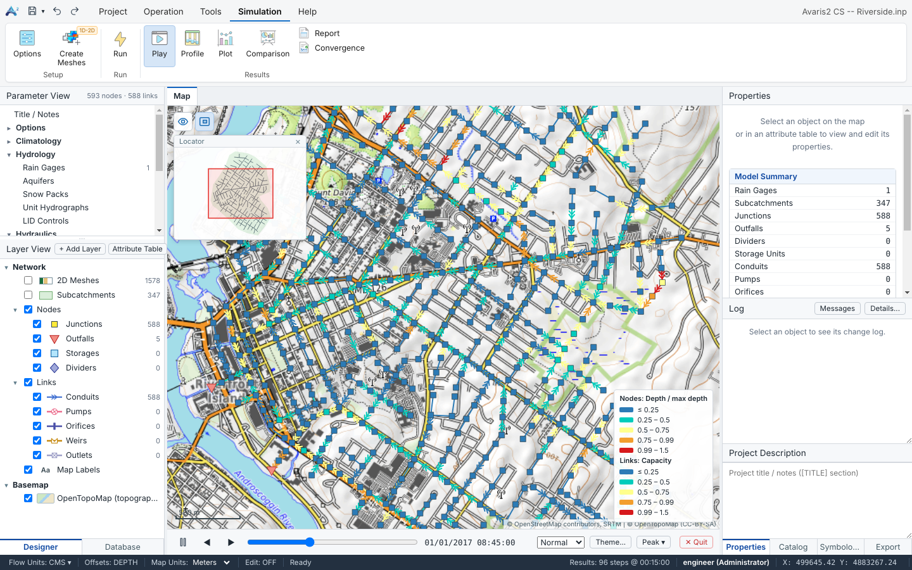
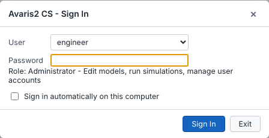
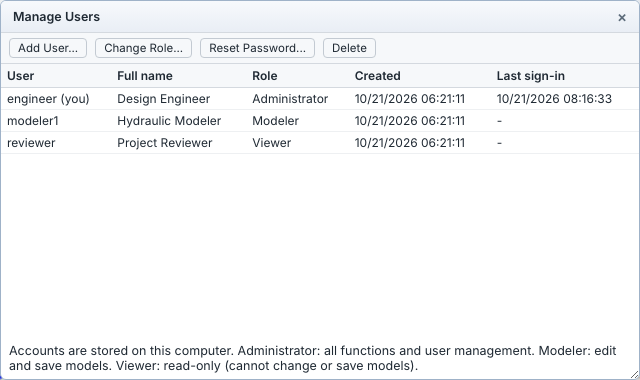
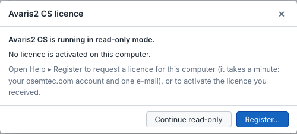
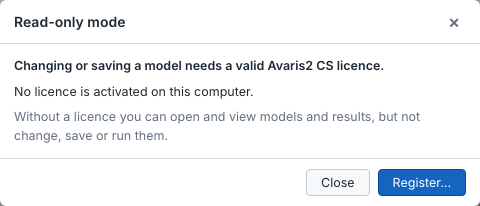
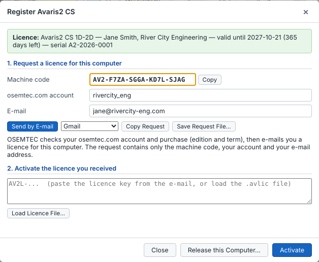
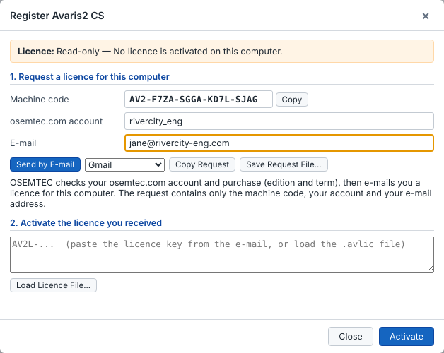
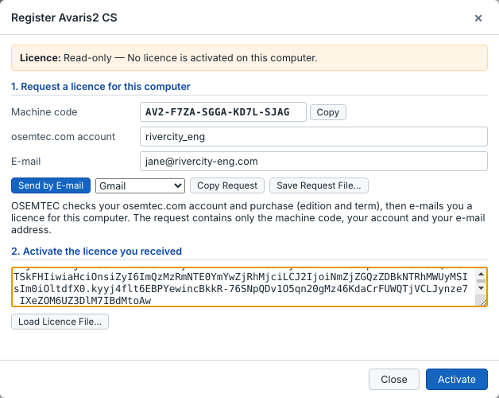
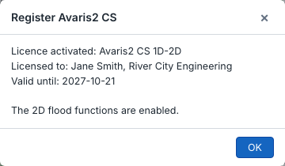
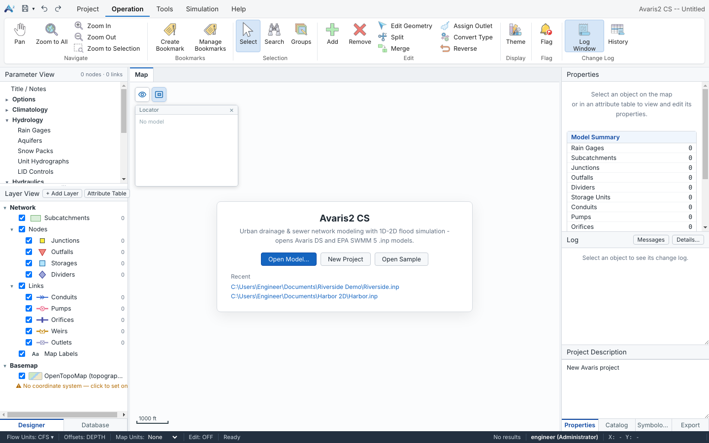

Avaris2 CS (Collection System) is a desktop application for planning, analysing and operating urban drainage, storm water and sanitary sewer networks. It combines the Avaris hydraulic engine, built for large and hard-to-converge models, with a GIS map, result analysis tools and an optional 1D-2D surface flood module.

Avaris2 CS replaces Avaris CS 4.x. It opens the same .inp models, and also reads and writes EPA SWMM 5 and Avaris DS models. The main additions are:
dur, run, win, peak…) that work over the whole simulation.Throughout this guide, menu paths are written as Tab ▸ Group ▸ Command. For example, Simulation ▸ Run ▸ Run is the large Run button on the Simulation tab.
| Item | Minimum | Recommended |
|---|---|---|
| Operating system | Windows 10, 64-bit | Windows 11, 64-bit |
| Processor | 2 cores | 8 or more cores. The Avaris engine solves node depths in parallel. |
| Memory | 8 GB | 16–32 GB for models with more than 500,000 objects |
| Disk | 500 MB for the program | SSD, plus space for results. A binary results file is roughly objects × variables × time steps × 4 bytes. |
| Display | 1366 × 768 | 1920 × 1080 or larger |
| Internet | Not required | Required only for online basemaps and the online user guide |
Avaris2 CS installs next to Avaris CS 4.x, EPA SWMM and Avaris DS, and does not change their settings or file associations.
Avaris2CS-Setup-<version>.exe and double-click it. You need administrator rights..inp files without replacing your default program.C:\Program Files\Avaris2 CS, or choose another one, then click Install.Microsoft SmartScreen can show this message for newly released programs. Click More info ▸ Run anyway. If you downloaded the installer from a browser, you can also right-click the file, choose Properties, tick Unblock and click OK.
Run the new installer over the existing installation. Avaris2 CS closes a running copy before it replaces the files.
An installation that still carries the earlier name Avaris2 is removed automatically. Your settings, user accounts and change history are kept, because they are stored in your Windows profile and not in the program folder.
Use Windows Settings ▸ Apps ▸ Avaris2 CS ▸ Uninstall. Your models, results and settings are not deleted.
Avaris2 CS records who changed a model and when, so every session starts with a sign-in.
The first time the program starts on a computer, it asks you to create an Administrator account. Later starts show the sign-in dialog. Tick Sign in automatically on this computer if you are the only user.

| Role | Can do |
|---|---|
| Administrator | Everything, including adding and removing users, changing roles and resetting passwords. |
| Modeler | Edit and save models, and run simulations. |
| Viewer | Open models, run simulations and view results. Cannot change or save models. |
Administrators manage accounts in Project ▸ User ▸ Manage Users. To change user without restarting, use Project ▸ User ▸ Switch User or click the user name in the status bar.

Accounts are stored on this computer, in the Avaris2 CS settings folder of the Windows profile. They are not shared through the model files.
Each Avaris2 CS licence is for one computer. Your licence is linked to your account on osemtec.com; the edition and the term follow your purchase.
There are two editions, each available for 30 days, 1 year or several years:
| Function | Avaris2 CS 1D | Avaris2 CS 1D-2D |
|---|---|---|
| Network modelling, editors, GIS, scenarios | ✓ | ✓ |
| 1D simulation, results, flags, reports, profiles | ✓ | ✓ |
| 2D options, Create Meshes, 1D-2D flood simulation and flood maps | – | ✓ |
Without a valid licence, Avaris2 CS runs in read-only mode: you can open and view models and results, but not change, save or run them. This also applies when the licence has expired, was issued for another computer, or when the computer clock has been set back. When you try to edit, save or run, Avaris2 CS tells you why and offers Register….


To get a licence, see Request and activate a licence.
Help ▸ Register shows the licence of this computer at the top: edition, licensee, expiry date, days left and serial number. The window title shows the edition (1D or 1D-2D).

The licence is stored with your Windows user settings, not in the installation folder. Installing a new version, uninstalling and reinstalling, or installing into another folder keeps the licence; you do not need to request a new one.
If the settings were deleted (for example by a clean-up tool) or you sign in to Windows with another user account, Avaris2 CS starts read-only again. Activate the same licence key again in Help ▸ Register: it stays valid on this computer until its expiry date. Keep the e-mail or the .avlic file you received from OSEMTEC.
The machine code is calculated from the Windows installation, the system drive and the network adapters; two of the three must match. Adding a docking station, a VPN or switching between Wi-Fi and cable does not change the licence. Reinstalling Windows, replacing the system drive or the main board, or a new computer needs a new licence: send a new request.
You send a licence request for this computer from Avaris2 CS by e-mail. OSEMTEC checks your account and purchase and e-mails you a licence key, which you activate in Avaris2 CS. Activation works offline.
AV2-F7ZA-SGGA-KD7L-SJAG.info@osemtec.com that is already written. Sign in first if the browser asks you to.
The request e-mail looks like this. Do not change the request code; it identifies this computer.
To: info@osemtec.com
Subject: Avaris2 CS licence request - rivercity_eng - AV2-F7ZA-SGGA-KD7L-SJAG
Avaris2 CS licence request
osemtec.com account: rivercity_eng
E-mail: jane@rivercity-eng.com
Machine code: AV2-F7ZA-SGGA-KD7L-SJAG
Computer: ENG-WS-07 (Windows_NT 10.0.22631)
Avaris2 CS version: 2.2.3
--- request code (please do not edit) ---
AVREQ-eyJ2IjoyLCJ1c2VyIjoicml2ZXJjaXR5X2VuZyIsImVtYWlsIjoiamFuZUByaXZlcmNpdH
ktZW5nLmNvbSIsImNvZGUiOiJBVjItRjdaQS1TR0dBLUtEN0wtU0pBRyIsImh3Ijp7ImciOiJkMz
…
--- end ---The request contains only your account, your e-mail address, the machine code and the computer name. Your name, company, edition and term are taken from your osemtec.com account and purchase.
Click Copy Request and paste the text into any e-mail to info@osemtec.com, or click Save Request File… and send the .avreq file from another computer, for example when the computer has no internet access.
OSEMTEC checks your account and purchase and replies to the e-mail address in the request. The e-mail contains the edition, the validity period, the serial number and the licence key, a long text starting with AV2L-; it may also have the key as an .avlic file.
.avlic file.
Avaris2 CS confirms the edition, the licensee and the expiry date. All functions of the edition are available at once; no restart is needed.

From 30 days before the expiry date, Avaris2 CS reminds you at start-up. After you renew or upgrade (for example from 1D to 1D-2D) on osemtec.com, OSEMTEC sends you a new licence key; activate it in Help ▸ Register in the same way. If OSEMTEC asks for it, send a new request first.
| Message | What to do |
|---|---|
| This is not an Avaris2 CS licence key / signature check failed | Copy the whole key from AV2L- to the end, or use the .avlic file. |
| This licence was issued for another computer | The key belongs to another machine code. Send a request from this computer. |
| The licence expired on … | Renew the licence on osemtec.com. |
| The computer clock is set earlier than the last time Avaris2 CS was used | Correct the date and time of the computer, then restart Avaris2 CS. |
This tutorial walks you through the basic workflow: open a model, check it, run it, and read the results on the map, in graphs and in the report.
Documents\Avaris2 CS\Samples and open it. To open your own model, click Open Model… and pick any EPA SWMM 5.x or Avaris .inp file.
Roll the mouse wheel to zoom, and drag with the middle mouse button (or hold Space and drag) to pan. Press Home to see the whole model. The Locator in the top-left corner of the map shows where you are.
Click an object to see its properties in the Properties pane on the right. Edits you make there are applied immediately and can be undone with Ctrl+Z.
Each run is saved in the <model>_Results folder next to the model and listed in the Database pane, so you can keep and compare as many runs as you need.
Help ▸ Quick Start shows a one-page summary of these steps inside the program, and Help ▸ Shortcuts lists the keyboard shortcuts.